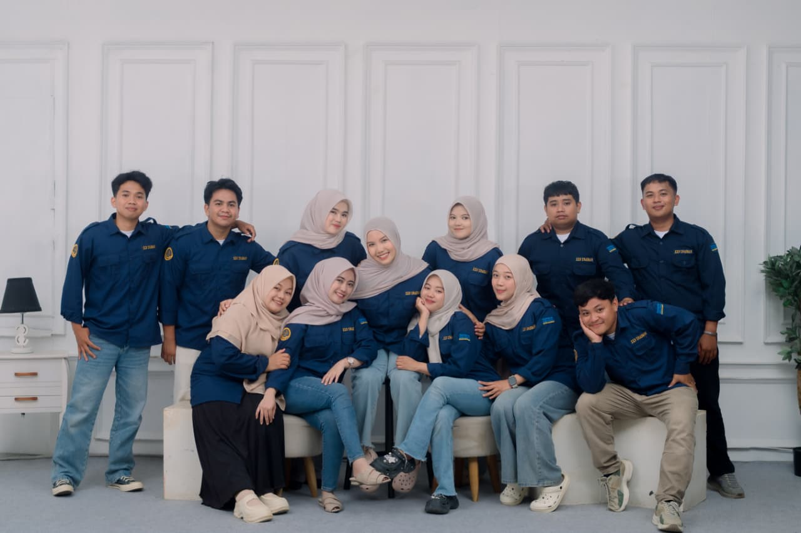

KKN PUMD UNASMAN ANGKATAN XLII
THIS IS
NOT A GOODBYE.
Ini hanya akhir dari satu perjalanan, sebelum kita memulai perjalanan masing-masing.

Sebelum semuanya kembali menjadi kenangan.
AND IF WE EVER FORGET...
COME BACK
HERE.
Buka kembali halaman ini.
Lihat kembali wajah-wajah yang pernah mengisi hari-hari kita.
Baca kembali cerita yang pernah kita tulis.
Dan ingatlah bahwa pernah ada satu masa ketika kita tidak tahu bahwa hari-hari yang sedang kita jalani ternyata akan menjadi sesuatu yang sangat kita rindukan.
DESA BUSSU · 2026